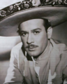
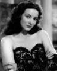
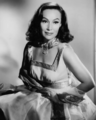

La cinematografia nacional ha vivido etapas gloriosas, destacando a nivel mundial por sus narrativas, directores e interpretes iconicos que marcaron pauta en la industria. La Epoca de Oro del cine mexicano fue un periodo de esplendor creativo e industrial en el que Mexico se convirtio en el epicentro de la produccion cinematografica de America Latina, definiendo la identidad cultural del pais a traves de generos iconicos llenos de musica, drama y comedia.
| Pelicula | Año | Actores Principales | Lugar de Filmacion |
|---|---|---|---|
| Ahi esta el detalle | 1940 |
Mario Moreno "Cantinflas" Joaquin Pardave Sara Garcia |
Estudios Mexico Films en la Ciudad de Mexico Interiores filmados en sets que recreaban las casonas de la alta sociedad Consagro a Cantinflas como la maxima figura de la comedia popular y el caos verbal |
| El gendarme desconocido | 1941 |
Mario Moreno "Cantinflas" Mapy Cortes Daniel "Chino" Herrera |
Estudios Mexico Films en la Ciudad de Mexico Locaciones exteriores en calles del Centro Historico de la Ciudad de Mexico Establecio el arquetipo del picaro urbano que se infiltra en las instituciones |
| Maria Candelaria | 1943 |
Dolores del Rio Pedro Armendariz |
Canales tradicionales de Xochimilco en la Ciudad de Mexico Estudios Gabriel Figueroa para los interiores dramaticos Primera cinta latinoamericana en ganar la Palma de Oro en el Festival de Cannes |
| Enamorada | 1946 |
Maria Felix Pedro Armendariz |
Zonas historicas de San Pedro Cholula en el estado de Puebla Templo de San Francisco Acatepec y los arcos del Portal Guerrero Consolido a Maria Felix en su papel definitivo de mujer altiva e independiente |
| Nosotros los Pobres | 1947 |
Pedro Infante Blanca Estela Pavon |
Antiguos barrios de las zonas populares de la Ciudad de Mexico Estudios Tepeyac para la recreacion de las vecindades coloniales Se convirtio en el melodrama urbano mas emblematico del cine de barrio nacional |
| Los Olvidados | 1950 |
Alfonso Mejia Roberto Cobo Stella Inda |
Barrio antiguo de Nonoalco y periferias de la Ciudad de Mexico Estudios Tepeyac para el rodaje de interiores de realismo crudo Dirigida por Luis Buñuel y declarada Memoria del Mundo por la UNESCO |
|
 Pedro Infante |
Cantinflas |
 Maria Felix |
 Dolores del Rio |